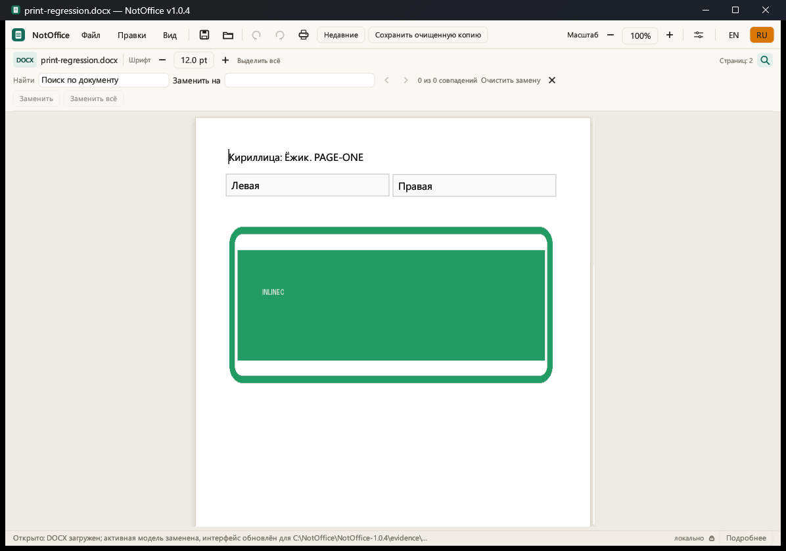
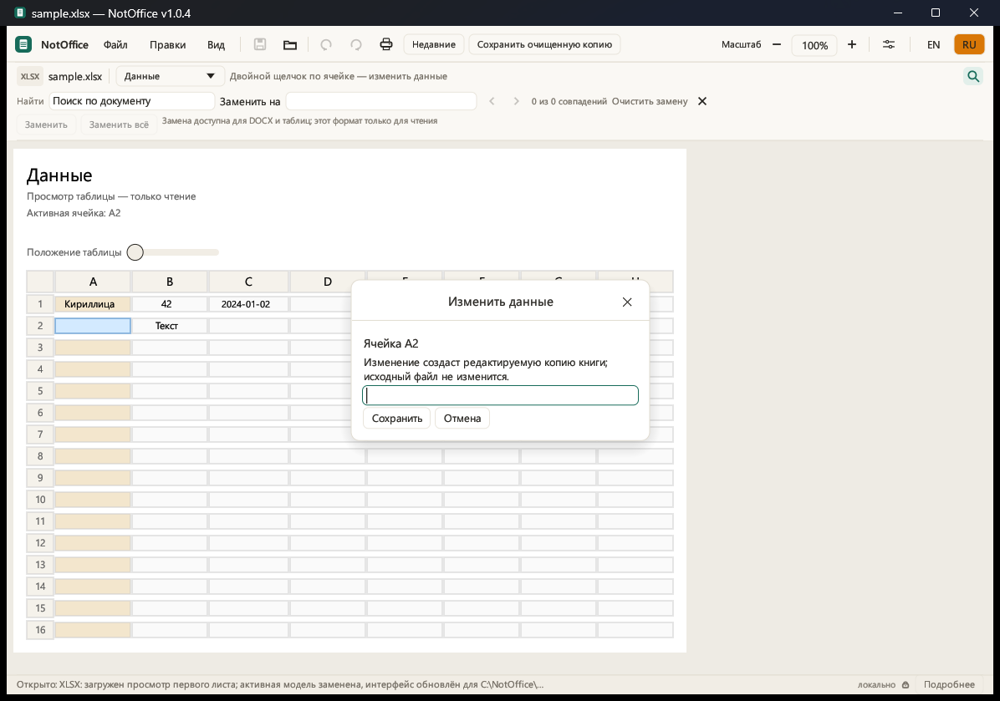

DOCX, TXT, Markdown и RTF
Просмотр и редактирование текста, поиск и замена, Undo/Redo, независимые окна. Enter создаёт новую строку, двойной клик выделяет слово, а выделение хорошо видно.
NotOffice — бесплатный портативный редактор и просмотрщик для самых нужных форматов. Работает локально, запускается из папки и не требует Microsoft Office.

Редактор для повседневных задач: открыть, прочитать, поправить, найти, заменить, напечатать и сохранить. Локально, на своём компьютере.
Просмотр и редактирование текста, поиск и замена, Undo/Redo, независимые окна. Enter создаёт новую строку, двойной клик выделяет слово, а выделение хорошо видно.
Правка ячеек, простые формулы 1+2 и =A1+B1, заполнение вниз, выбор и копирование строк/столбцов, очистка по Delete и горизонтальная прокрутка.
Растровый просмотр PDF без редактирования. Печать доступна на Windows — без запуска тяжёлого офисного пакета.
Поля поиска и замены видны по умолчанию. «Заменить всё» — одна транзакция отмены. Ctrl+Z работает и в поле замены.
Периодические резервные копии рядом с EXE. После аварийного закрытия NotOffice предложит восстановить или удалить сохранённую копию. Оригинал не меняется.
Светлая, тёмно-синяя, пергамент, шалфей, тёплый графит и янтарный терминал. Тема меняет только интерфейс — не документ, печать или PDF.
Сохраняет текст и простую структуру без макросов, OLE и активного содержимого. Для DOC/DOCX/XLS/XLSX.
Печать, PDF, HTML, TXT и CSV — чтобы быстро поделиться результатом или отправить на бумагу.
Вставьте текст из буфера в XLSX-таблицу как значения, начиная с активной ячейки.
Два языка интерфейса и шесть экранных тем. Документ и печать от темы не зависят.
NotOffice не просит аккаунт, не привязывает документы к облаку и не требует постоянного интернета. Открыли файл — работаете с ним на своём компьютере.
NotOffice — не антивирус и не заменяет проверку файлов из недоверенных источников. Макросы и скрипты документов не выполняются.
Честная таблица возможностей. Сложная вёрстка и объекты Office поддерживаются не полностью — это не полная замена Word и Excel.
| Формат | Просмотр | Редактирование | Комментарий |
|---|---|---|---|
| DOCX | Да | Да | Текст, простые таблицы и изображения; сложные стили — частично. |
| TXT / MD | Да | Да | Обычный текст и Markdown, поиск и замена. |
| RTF | Да | Да | Простой RTF; сложная разметка не гарантируется. |
| XLSX | Да | Да* | Правка значений и простая арифметика; сохранение поддерживаемой XLSX-копии. |
| XLS / XLSB / ODS | Да | Только копия | Просмотр и сохранение значений в новый XLSX; исходный формат не перезаписывается. |
| CSV / TSV | Да | Через XLSX | Просмотр, при необходимости — работа с копией. |
| Да | Нет | Растровый просмотр и печать на Windows. | |
| DOC (legacy) | Да | В DOCX-копию | Извлечение текста и доступных изображений; структура может потеряться. |
* Редактирование XLSX — это работа с поддерживаемой копией значений, а не полная совместимость с формулами, диаграммами и стилями Excel.
Наберите 1+2 или =1+2, нажмите Enter — в ячейке появится результат. Ссылки A1, скобки, + − × ÷.
Горизонтальная прокрутка внизу, закрепление верхней строки/левого столбца, копирование строк/столбцов, Delete и заполнение вниз.
Enter в DOCX переносит на новую строку и сохраняется, фокус не теряется. Поиск и замена всегда на виду.
Убраны лишние пункты меню. «Недавние» открываются в новом окне, recovery-каталоги можно удалить с подтверждением.
Страница документа остаётся страницей, а вокруг — только нужные инструменты. Скриншоты сделаны в NotOffice 1.0.4.

Открыть договор, инструкцию, таблицу расходов или PDF. Без покупки Office ради пары файлов.
Быстро поправить текст, найти и заменить, напечатать документ или свести простую таблицу.
Портативная папка, около 4,5 МБ, без установщика и фоновых сервисов. Запуск с флешки — штатный сценарий.
NotOffice — не полная замена Microsoft Office. Мы предпочитаем честно сказать, что работает неидеально, чем прятать это в мелком шрифте.
Полный статус и границы доказательствРаспакуйте portable-архив и запустите EXE. Нужна Windows 10/11 x64 и папка с правом записи.
Нет. NotOffice открывает поддерживаемые форматы сам. Microsoft Office может понадобиться только для сложного редактирования, с которым NotOffice справляется частично.
Нет. EXE запускается из папки. Portable-архив уже содержит EXE, инструкцию и лицензии. Настройки и recovery создаются рядом с EXE.
Никуда. Базовый сценарий — локальная работа с файлами на компьютере. NotOffice не требует аккаунта или облачного хранилища.
Простые арифметические формулы в XLSX-правке: числа, + − × ÷, скобки и ссылки A1. Сложные функции, диаграммы и пересчёт внешних книг не поддерживаются.
Нет. PDF открывается для просмотра и печати. Редактирование, поиск по тексту и извлечение содержимого не входят в бесплатную версию.
Исходники и сборочные скрипты есть, но готового стабильного приложения и runtime-приёмки нет. Стабильная платформа — Windows 10/11 x64.
NotOffice не исполняет макросы и скрипты документов. Но это не антивирус: файлы из недоверенных источников всё равно стоит проверять.
Потому что для базовой работы с документами не всегда нужен большой офисный пакет и подписка. Название — напоминание, что инструмент может быть маленьким.